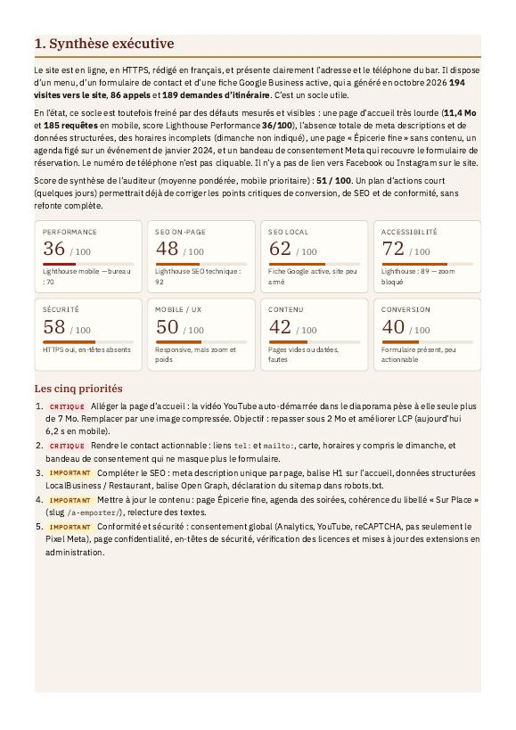
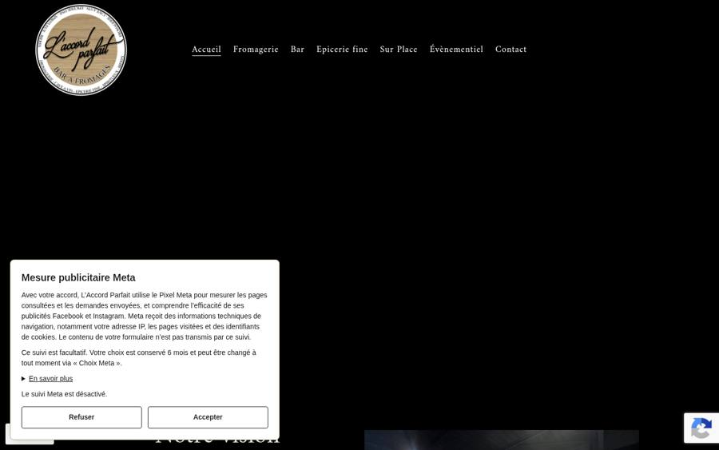

Réalisations
Des travaux réels, présentés avec des chiffres mesurés. Aucun résultat n’est inventé.
Audit du site de L’Accord Parfait
J’ai réalisé l’audit du site de L’Accord Parfait (voir le site) : 8 pages + 1 article, en-têtes HTTP, certificat, sitemaps, formulaire, mesures Lighthouse mobile et bureau.
Score de synthèse : 51/100 (moyenne pondérée, mobile prioritaire).
Télécharger le rapport PDF (10 pages)
Version publique du rapport : les informations internes (comptes, coordonnées) ont été retirées.


Scores mesurés (avant correction)
Principaux défauts trouvés et corrections recommandées
| Gravité | Constat mesuré | Correction recommandée |
|---|---|---|
| Critique | Page d’accueil trop lourde 11,4 Mo et 185 requêtes sur mobile ; la vidéo YouTube du diaporama pèse à elle seule plus de 7 Mo. LCP 6,2 s. | Remplacer la vidéo par une image compressée, alléger les scripts : objectif < 2 Mo. |
| Critique | Contact peu actionnable Téléphone et e-mail non cliquables, pas de carte ni d’itinéraire, bandeau Meta qui recouvre le formulaire. | Liens tel:/mailto:, carte, horaires complets, bandeau de consentement repositionné. |
| Important | SEO incomplet Aucune meta description sur les 9 pages auditées, pas de données structurées Restaurant / LocalBusiness, pas d’Open Graph. | Meta description unique par page, H1 sur l’accueil, schema.org LocalBusiness, sitemap déclaré dans robots.txt. |
| Important | Contenu daté Page « Épicerie fine » vide, agenda figé sur un événement de janvier 2024, dimanche absent des horaires. | Remplir et mettre à jour les pages, relire les textes. |
| Important | Conformité et sécurité Consentement limité au Pixel Meta (pas Analytics, YouTube, reCAPTCHA), en-têtes de sécurité absents. | Consentement global, page confidentialité, en-têtes HTTP de sécurité. |
Avant

Accueil, capture du 13 novembre 2026.
Après correction
En cours
Les corrections sont en préparation. Les nouveaux scores seront publiés ici une fois mesurés, pas avant.
Kit vitrine WordPress maison
Un thème WordPress léger (100 % Gutenberg, sans extension payante) avec 6 modèles prêts à personnaliser : artisan, restaurant, consultant, coiffure, santé, immobilier. Il me permet de livrer un site vitrine de 5 à 7 pages rapidement. Les entreprises affichées sont fictives.
Vous voulez le même audit pour votre site ?
Rapport PDF chiffré, défauts classés par gravité et plan d’actions concret.
Me contacter via Codeur